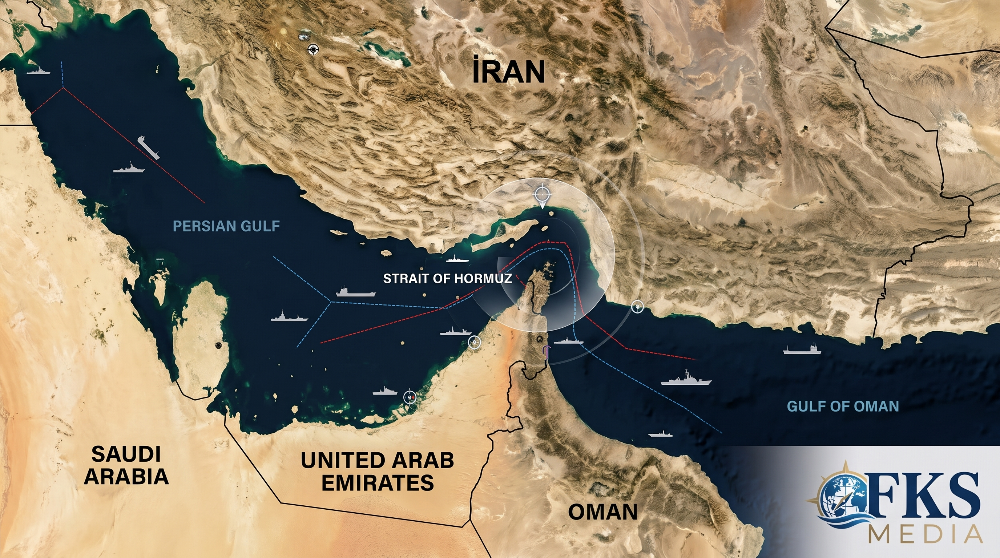

Hürmüz Boğazı'nda düğüm: ABD ve İran arasındaki müzakerelerin temel anlaşmazlığı

Hürmüz Boğazı, Basra Körfezi'ni Umman Körfezi'ne bağlayan dar bir deniz geçidi olmasının ötesinde, küresel enerji güvenliğinin en önemli stratejik noktalarından biridir. Dünya petrol ticaretinin önemli bir bölümü bu güzergâhtan geçerken, boğazda yaşanan herhangi bir kesinti yalnızca Körfez ülkelerini değil, Avrupa'dan Asya'ya kadar uzanan geniş bir ekonomik alanı etkileyebiliyor. Bu nedenle ABD ile İran arasındaki çatışmanın merkezinde yer alan Hürmüz meselesi, bugün yalnızca bölgesel bir güvenlik sorunu değil, uluslararası ekonomi ve diplomasi açısından da belirleyici bir konu hâline gelmiş durumda.
Uluslararası Enerji Ajansı'nın (IEA) Şubat 2026 tarihli verilerine göre, 2025 yılında Hürmüz Boğazı'ndan günlük ortalama 20 milyon varil ham petrol ve petrol ürünü taşındı. Bu miktar, dünya genelindeki deniz yoluyla gerçekleştirilen petrol ticaretinin yaklaşık dörtte birine karşılık geliyor. Katar'ın sıvılaştırılmış doğal gaz (LNG) ihracatı açısından da aynı güzergâhın önemi oldukça yüksek. Dolayısıyla boğazdaki güvenlik sorunu, enerji fiyatlarından nakliye maliyetlerine ve tedarik zincirlerine kadar uzanan sonuçlar doğuruyor.
Savaşın ardından Hürmüz Boğazı neden müzakerelerin merkezine yerleşti?
Şubat 2026'da ABD ve İsrail'in İran'a yönelik askerî operasyonlarıyla başlayan savaş, Hürmüz Boğazı'ndaki deniz trafiğini ciddi biçimde etkiledi. İran'ın geçişler üzerindeki kontrolü ve ABD'nin İran limanlarına yönelik deniz ablukası, bölgedeki ticari hareketliliği daha karmaşık bir hâle getirdi.
Bununla birlikte boğazdaki trafik tamamen durmuş değil. Reuters'ın 11 Kasım tarihli haberine göre, Ekim ayında LNG taşıyan tankerlerin sayısı savaşın başlamasından bu yana en yüksek seviyeye ulaştı. Aynı dönemde gemilere yönelik saldırıların da artması, ticari hareketliliğin yeniden başlaması ile deniz güvenliğinin sağlanmasının birbirinden farklı meseleler olduğunu gösteriyor.
Bu tablo, tarafların neden Hürmüz Boğazı konusunda uzlaşmakta zorlandığını anlamak açısından önemli. Washington için temel öncelik, uluslararası deniz ticaretinin kesintisiz ve güvenli biçimde devam etmesi. Tahran açısından ise boğaz üzerindeki konumu, ABD'nin ekonomik ve askerî baskısına karşı önemli bir diplomatik müzakere aracı niteliği taşıyor.
İran'ın yaklaşımı: Deniz güvenliği karşılığında ekonomik ve siyasi güvenceler
Tahran, Hürmüz Boğazı'nın geleceğini yalnızca deniz trafiğinin yeniden açılması meselesi olarak değerlendirmiyor. İran yönetimi, ABD'nin uyguladığı ekonomik yaptırımların ve deniz ablukasının sona ermesini de müzakerelerin temel koşulları arasında görüyor.
İran Dışişleri Bakanlığı Sözcüsü İsmail Bekayi, 9 Kasım'da yaptığı açıklamada, Tahran'ın iki gün içerisinde müzakerelerin yeniden başlatılmasına imkân sağlayabilecek bir yol haritasını savundu. Reuters'ın aktardığına göre İran, görüşmelerin başlayabilmesi için ABD'nin yaptırımları ve deniz ablukasını kaldırmasını, ayrıca savaşın bütün cephelerde sona ermesini istiyor. Bu yaklaşım, daha önce gündeme getirilen yedi günlük formülün daha kısa bir zaman çerçevesine uyarlanmış hâli olarak değerlendiriliyor.
İran açısından bu taleplerin arkasında birkaç temel unsur bulunuyor. İlk olarak, yaptırımların kaldırılması ülkenin petrol ihracatı ve uluslararası ekonomik ilişkileri üzerindeki kısıtlamaların hafifletilmesi anlamına geliyor. İkinci olarak, ABD ablukasının sona ermesi İran'ın dış ticaret ve enerji ihracatını yeniden hareketlendirebilir. Üçüncü olarak ise Tahran, Hürmüz Boğazı'nın gelecekteki yönetiminde kıyıdaş devletlerin rolünün dikkate alınmasını istiyor.
Bu son konu özellikle Umman ile İran arasındaki diplomatik temaslarda öne çıkıyor. İki ülke, Haziran 2026'da yayımladıkları ortak açıklamada boğazın gelecekteki deniz trafiği yönetimi ve ilgili hizmetler konusunda ortak bir çalışma grubu oluşturma kararı aldı. Ağustos ayında ise geçici bir ortak seyir koridoru ve gelecekteki yönetim mekanizmasına ilişkin görüşmeler gündeme geldi. Ancak bu gelişmeleri, Hürmüz Boğazı'nın yönetimi konusunda kesin bir anlaşmaya varıldığı şeklinde yorumlamak doğru olmaz.
Washington'ın yaklaşımı: Serbest geçiş ve stratejik baskının korunması
ABD yönetiminin yaklaşımı ise farklı önceliklere dayanıyor. Washington, Hürmüz Boğazı'nın uluslararası deniz trafiğine açık tutulmasını ve İran'ın bu güzergâh üzerindeki kontrolünün kalıcı bir siyasi veya ekonomik avantaja dönüşmemesini istiyor. Boğazın güvenliği, Körfez ülkelerinin ekonomik istikrarı, ABD'nin bölgesel müttefikleriyle ilişkileri ve uluslararası deniz ticaretinin güvenilirliğiyle doğrudan bağlantılı.
Bunun yanında Washington, İran'a yönelik ekonomik baskıyı müzakerelerde önemli bir araç olarak korumaya çalışıyor. ABD Dışişleri Bakanı Marco Rubio'nun İran'ın taleplerine yönelik açıklamaları ve Reuters'ın 10 Kasım tarihli haberinde aktarılan G7 temasları, yönetimin yaptırımları ve deniz ablukasını sürdürme eğiliminde olduğunu gösteriyor. ABD'nin bakış açısından, boğazın yeniden açılması karşılığında önceden yaptırım tavizi verilmesi, İran'ın müzakerelerdeki konumunu güçlendirebilir.
Ancak bu yaklaşımın da bazı maliyetleri bulunuyor. Ablukanın ve askerî gerilimin devam etmesi, yalnızca İran ekonomisini değil, bölgedeki ticari faaliyetleri ve ABD'nin müttefikleriyle ilişkilerini de etkiliyor. Ayrıca uzun süreli belirsizlik, enerji piyasalarında fiyat dalgalanmalarını ve nakliye maliyetlerini artırabiliyor.
Umman'ın rolü: İki taraf arasında deniz güvenliği diplomasisi
Hürmüz Boğazı tartışmalarında Umman'ın konumu özel bir önem taşıyor. Boğazın diğer kıyıdaş ülkesi olan Umman, hem coğrafi konumu hem de İran ve diğer bölgesel aktörlerle sürdürdüğü diplomatik ilişkiler nedeniyle deniz güvenliği konusunda önemli bir aktör.
Umman Dışişleri Bakanlığı'nın 23 Haziran 2026 tarihli ortak açıklamasında, İran ve Umman'ın boğazın gelecekteki yönetimi konusunda ortak bir çalışma grubu oluşturması ve bölgedeki diğer kıyıdaş devletlerle de görüşmeler yürütmesi kararlaştırıldı. 25 Ağustos tarihli açıklamada ise geçici seyir koridoru, mayın temizliği ve kalıcı deniz ulaşım düzenlemesi gibi teknik konular ele alındı. Bununla birlikte Umman'ın girişimlerinin başarısı, ABD ve İran'ın temel anlaşmazlıklarını çözebilmesine bağlı.
Uluslararası ekonomi açısından Hürmüz Boğazı
Hürmüz Boğazı'ndaki gelişmelerin etkisi, ABD ve İran arasındaki ilişkilerin çok ötesine uzanıyor. Çin, Hindistan, Japonya ve Güney Kore gibi büyük enerji tüketicileri açısından boğazdaki güvenlik, enerji arzının sürekliliğiyle doğrudan bağlantılı. Avrupa açısından da küresel enerji piyasalarının birbirine bağlı olması nedeniyle Körfez'deki kesintiler maliyetlere yansıyor.
Suudi Arabistan ve Birleşik Arap Emirlikleri gibi ülkelerin alternatif ihracat güzergâhları bulunmasına rağmen, bu hatlar Hürmüz Boğazı'nın taşıdığı bütün ticaret hacmini karşılayabilecek kapasitede değil. Irak, Kuveyt, Katar ve İran gibi ülkelerin enerji ihracatı ise boğazın güvenliğine çok daha doğrudan bağlı.
Anlaşmazlığın geleceği: Üç temel mesele
Mevcut gelişmeler değerlendirildiğinde, müzakerelerin ilerlemesi üç temel sorunun çözümüne bağlı görünüyor: Birincisi, yaptırımlar ve deniz ablukasının hangi aşamada kaldırılacağı; ikincisi, boğazın gelecekteki yönetiminde kıyıdaş devletlerin rolü ile uluslararası seyrüsefer özgürlüğünün nasıl dengeleneceği; üçüncüsü ise saldırıların sona ermesi ve yeni bir askerî tırmanmanın önlenmesine yönelik kalıcı güvenlik güvenceleri.
Sonuç: Hürmüz Boğazı yalnızca bir geçiş noktası değil
Hürmüz Boğazı çevresindeki anlaşmazlık, uluslararası siyasette coğrafyanın, ekonomik bağımlılığın ve askerî gücün nasıl iç içe geçtiğini gösteren önemli bir örnek. Kalıcı bir çözüm yalnızca deniz trafiğinin yeniden başlamasıyla ölçülemeyecek; asıl belirleyici unsur tarafların güvenlik, egemenlik, ekonomik çıkarlar ve uluslararası deniz hukukunu aynı diplomatik çerçevede uzlaştırıp uzlaştıramayacağı olacak.
- International Energy Agency – Strait of Hormuz
- Reuters – Iran defends two-day proposal for peace talks after US rejects conditions, 9 November 2026
- Reuters – Hormuz traffic is up. So are the attacks, 11 November 2026
- Oman Ministry of Foreign Affairs – Joint Statement between Oman and Iran, 23 June 2026
- Oman Ministry of Foreign Affairs – Joint Statement following consultations, 25 August 2026
- Oman Ministry of Foreign Affairs – Minister in phone call with Iranian counterpart, 5 November 2026
- Reuters – Iran will make no nuclear concessions, 25 September 2026
Узел в Ормузском проливе: главные разногласия на переговорах США и Ирана
Ормузский пролив, соединяющий Персидский и Оманский заливы, является не просто узким морским проходом, а одной из важнейших стратегических точек глобальной энергетической безопасности. Через этот маршрут проходит значительная часть мировой торговли нефтью, поэтому любые перебои затрагивают не только страны Залива, но и обширное экономическое пространство от Европы до Азии.
Согласно данным Международного энергетического агентства (МЭА) от февраля 2026 года, в 2025 году через Ормузский пролив ежедневно транспортировалось в среднем 20 миллионов баррелей сырой нефти и нефтепродуктов, что составляет около четверти всей мировой морской торговли нефтью. Столь же критичен этот маршрут и для экспорта сжиженного природного газа (СПГ) из Катара.
Почему после начала войны пролив оказался в центре переговоров?
Война, начавшаяся в феврале 2026 года с военных операций США и Израиля против Ирана, серьёзно нарушила судоходство в Ормузском проливе. Контроль Ирана над проходом и морская блокада иранских портов со стороны США усложнили коммерческую навигацию.
Тем не менее движение не остановилось полностью. По сообщению Reuters от 11 ноября, в октябре число танкеров СПГ достигло максимума с начала войны, однако параллельно участились атаки на суда. Для Вашингтона главным приоритетом остаётся бесперебойная и безопасная морская торговля, тогда как для Тегерана контроль над проливом служит важнейшим дипломатическим рычагом против экономического и военного давления США.
Подход Ирана: экономические и политические гарантии в обмен на безопасность
Тегеран рассматривает будущее пролива в увязке со снятием экономических санкций США и прекращением морской блокады. Официальный представитель МИД Ирана Исмаил Багаи 9 ноября заявил о дорожной карте, позволяющей возобновить переговоры в течение двух дней при условии снятия санкций, отмены блокады и прекращения боевых действий на всех фронтах.
Кроме того, Тегеран настаивает на учёте роли прибрежных государств в будущем управлении проливом. В июне и августе 2026 года Иран и Оман объявили о создании совместной рабочей группы по управлению судоходством и обсудили временный навигационный коридор, однако окончательного соглашения пока не достигнуто.
Подход Вашингтона: свобода судоходства и сохранение давления
Вашингтон стремится сохранить Ормузский пролив открытым для международного судоходства, не допуская превращения географического положения Ирана в постоянный политический или экономический рычаг. Заявления госсекретаря США Марко Рубио и консультации G7 указывают на намерение администрации сохранять санкции и морскую блокаду до достижения предметных уступок.
Вместе с тем сохранение напряжённости несёт издержки и для союзников США в регионе, провоцируя волатильность цен на энергоносители и рост фрахтовых ставок.
Роль Омана: дипломатия морской безопасности
Будучи вторым прибрежным государством пролива, Оман играет ключевую посредническую роль. В совместных заявлениях от 23 июня и 25 августа 2026 года Маскат и Тегеран затронули технические вопросы разминирования, временного коридора и постоянного регулирования судоходства. Однако успех этих инициатив напрямую зависит от урегулирования базовых противоречий между США и Ираном.
Значение для мировой экономики
Крупнейшие азиатские импортёры — Китай, Индия, Япония и Южная Корея — критически зависят от поставок нефти и СПГ из Персидского залива. Хотя Саудовская Аравия и ОАЭ располагают альтернативными трубопроводами, их мощностей недостаточно для замещения всего объёма перевозок через Ормуз, а экспорт Ирака, Кувейта, Катара и Ирана напрямую привязан к проливу.
Будущее урегулирования: три ключевых вопроса
Дальнейший прогресс переговоров зависит от трёх факторов: последовательности снятия санкций и морской блокады; баланса между ролью прибрежных государств и международным морским правом (свободой судоходства); а также надёжных гарантий прекращения атак на суда.
Заключение
Кризис вокруг Ормузского пролива наглядно демонстрирует тесное переплетение географии, экономики и военной силы в мировой политике. Устойчивое решение потребует согласования вопросов безопасности, суверенитета, экономических интересов и международного морского права в единой дипломатической рамке.
- International Energy Agency – Strait of Hormuz
- Reuters – Iran defends two-day proposal for peace talks after US rejects conditions, 9 November 2026
- Reuters – Hormuz traffic is up. So are the attacks, 11 November 2026
- Oman Ministry of Foreign Affairs – Joint Statement between Oman and Iran, 23 June 2026
- Oman Ministry of Foreign Affairs – Joint Statement following consultations, 25 August 2026
- Oman Ministry of Foreign Affairs – Minister in phone call with Iranian counterpart, 5 November 2026
- Reuters – Iran will make no nuclear concessions, 25 September 2026